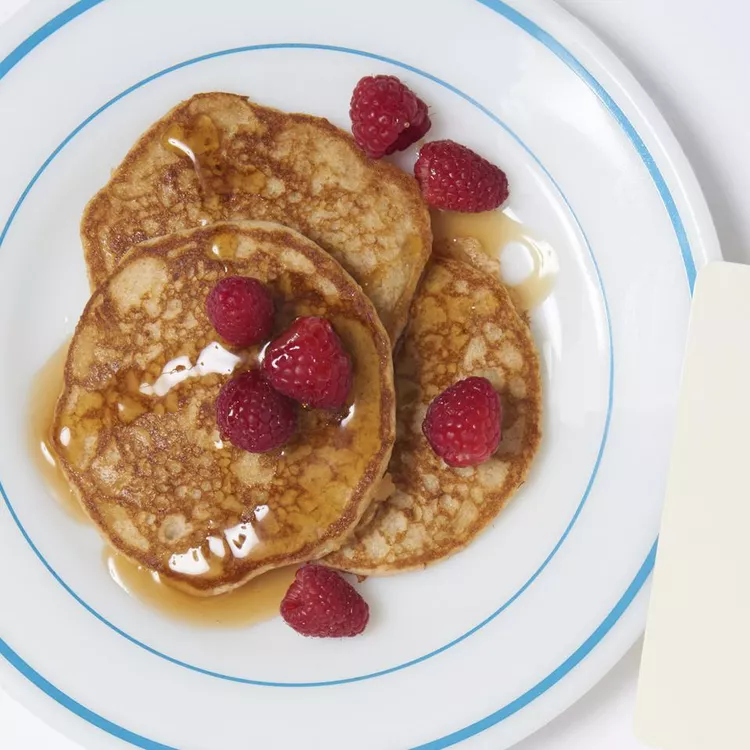

Whole Wheat pancakes Recipes
Home

Description
The Whole Wheat Pancakes recipe a wholesome and hearty breakfast option that doesn't compromise on taste.
Combining whole wheat flour with a touch of all-purpose flour and wheat germ, these pancakes achieve a light and tender texture.
The inclusion of brown sugar adds a subtle sweetness, while buttermilk and eggs enrich the batter, resulting in flavorful and satisfying pancakes
Preparation involves mixing the dry ingredients—whole wheat flour, all-purpose flour, wheat germ, baking powder, baking soda, brown sugar, and salt—followed by incorporating small pieces of unsalted butter until the mixture resembles coarse sand.
A well is then created in the center to add the buttermilk and beaten eggs, which are stirred until just combined.
Cooking the batter on a greased frying pan over medium heat allows the pancakes to develop a golden-brown exterior while remaining soft inside.
Served warm, these pancakes pair excellently with maple syrup, making them a delightful choice for a nutritious breakfast.
Ingredients
- 1 cup whole wheat flour
- 2/3 cup all-purpose flour
- 1/3 cup wheat germ
- 1 1/2 teaspoons baking powder
- 1/2 teaspoon baking soda
- 2 tablespoons brown sugar
- 1 teaspoon salt
- 5 1/3 tablespoons unsalted butter/li>
- 2 1/2 cups buttermilk
- 2 eggs, beaten
- 3 tablespoons unsalted butter
Steps
- In a food processor or in a large bowl, combine the whole wheat flour, white flour, wheat germ or oats, baking powder, baking soda, brown sugar, and salt.
- Cut the butter into small pieces with a knife, and add the butter to the flour-mixture. Mix until the mixture has a sand-like consistency.
- Make a well in the center of the flour-butter mixture, and add the buttermilk and eggs. Stir until the liquids are fully incorporated.
- eat a frying pan over medium heat and grease the surface with 1 tablespoon of butter or oil. Ladle the batter onto the surface to form 4 inch pancakes. Once bubbles form on the top of the pancakes, flip them over, and cook them on the other side for about 2 minutes.